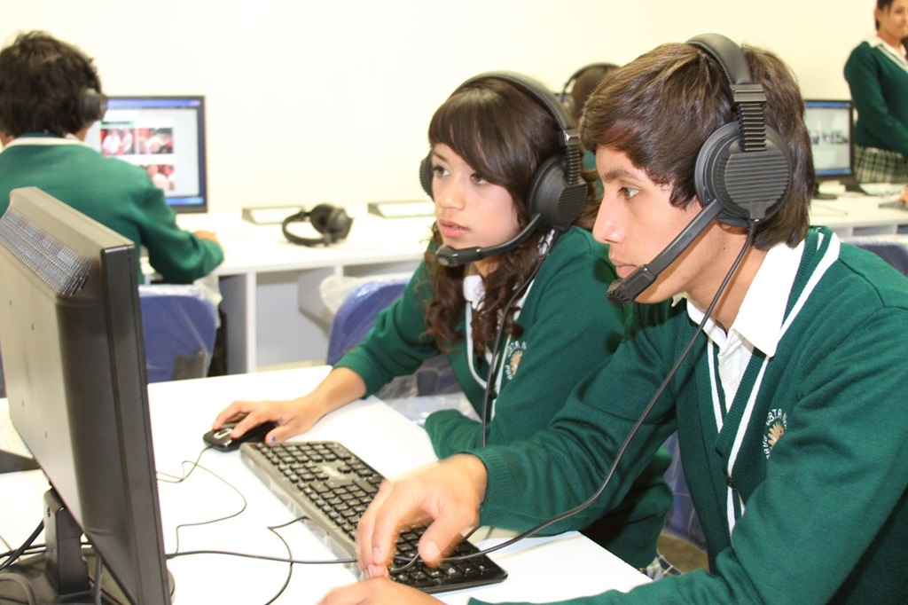

Los ciclos de grado básico de Formación Profesional son estudios voluntarios dirigidos a jóvenes que no han finalizado la ESO y quieren proseguir su formación reglada y obtener una titulación que les permita acceder al empleo o a estudios posteriores. Tienen una duración de dos años académicos. Se trata de estudios de oferta obligatoria y gratuita que brindan la oportunidad de seguir formándose al alumnado que ha tenido dificultades durante la Educación Secundaria Obligatoria y no ha conseguido titular.
